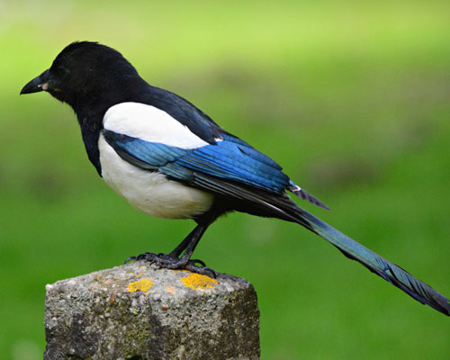
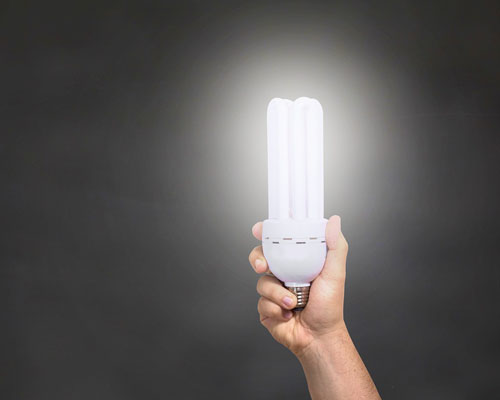
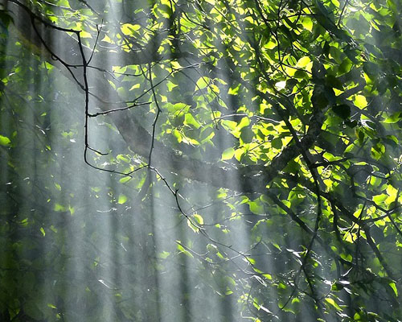
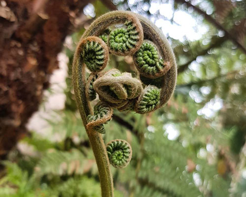
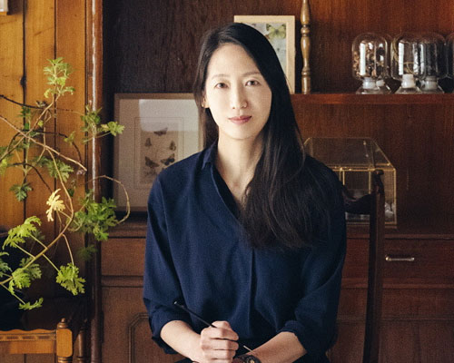
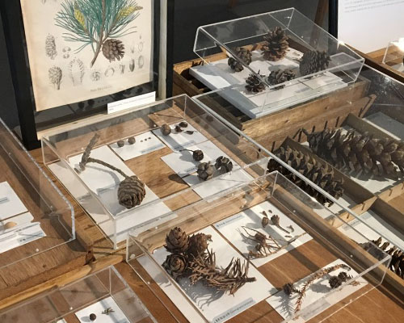
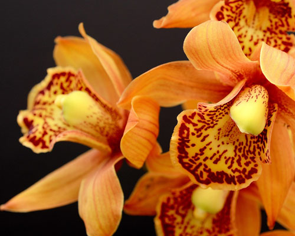
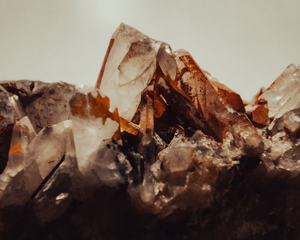
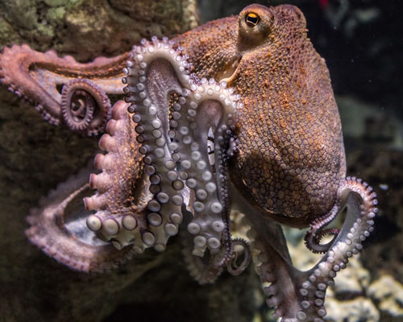

home > 온라인 박물관 > 전시
전시
서대문 자연사 박물관의 특별한 전시물을 살펴보세요
-

- [특별전시] 도시에서 만나는 새 - 이우만 초대전
- 도시 환경에서 발견되는 다양한 새들을 주제로 한 이우만 작가의 특별 전시로, 도시 생태계와 새의 공존을 다양한 시각으로 탐구합니다
-

- [갤러리월] 수화전 온라인 전시
- 수화를 주제로 한 디지털 아트 전시로, 수화의 아름다움과 의미를 온라인 플랫폼을 통해 관객에게 전달합니다
-

- [특별전시] 백두산의 식물 온라인전시
- 백두산의 다채로운 식물상을 다룬 온라인 전시로, 자연의 아름다움을 통해 환경 보존의 중요성을 강조합니다
-

- [특별전시] 공룡보다 오래 살아온 양치식물
- 화석화된 양치식물을 중심으로 한 특별 전시로, 공룡 시대를 넘어서도 살아온 식물의 역사와 중요성을 탐구합니다
-

- [특별전시] Mother Nature - 신혜우 초대전
- 자연을 테마로 한 신혜우 작가의 특별 전시로, 자연의 아름다움과 인간의 관계를 묘사합니다.
-

- [특별전] 자산어보 : 그림 없는 자연사
- 자연의 아름다움을 담은 이야기로, 말과 글만으로도 자연의 다채로운 모습을 표현한다. 이 특별한 전시는 시각적 표현을 넘어 자연의 신비를 전달합니다
-

- [특별전] 난초살롱 - 식물수집가의 비밀정원
- 자연사에 대한 이소요 작가의 독특한 시각을 통해 그림 없이도 자연의 아름다움을 경험할 수 있는 특별 전시입니다
-

- [기획전시] 슈퍼광물 기획전
- 흥미로운 광물들을 소개하고, 그들이 우리 생활에 미치는 영향을 탐구하는 전시로 구성되어있습니다
-

- [상설전시] 해양 무척추동물
- 해양 생태계의 중요성과 다양성을 탐구하며 해양 무척추동물의 생태학, 행동학 등을 소개하는 상설 전시입니다.